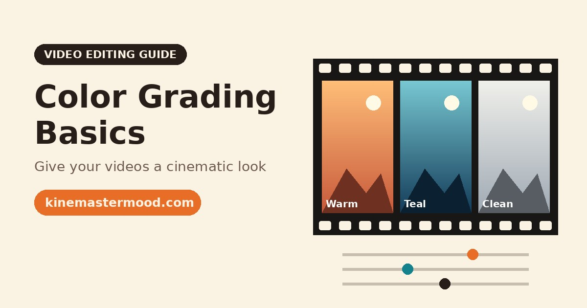
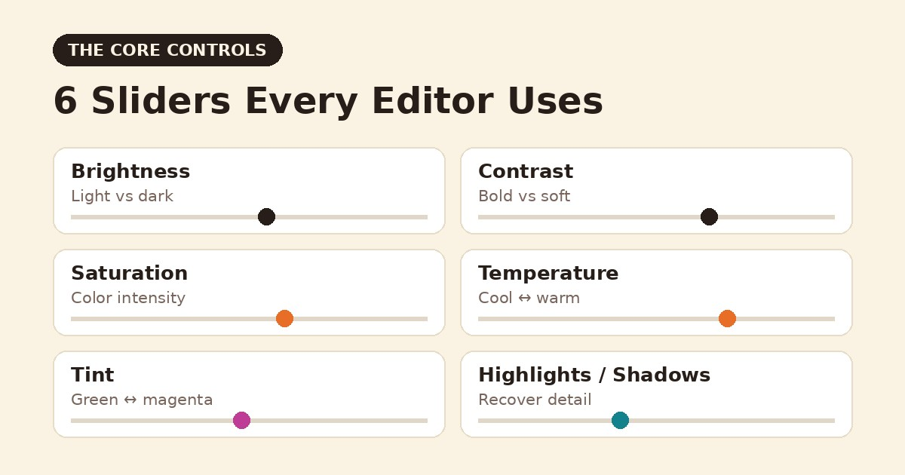
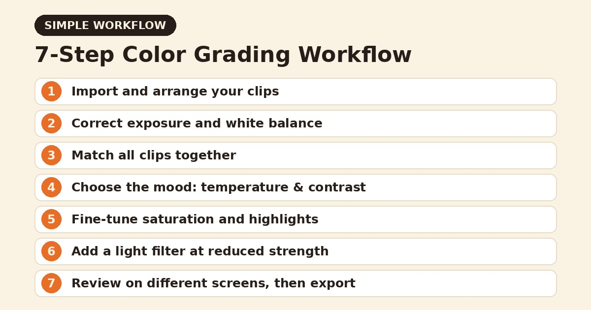

Color Grading Basics: How to Give Your Videos a Cinematic Look

Have you ever noticed how professional films and polished online videos share a certain mood? The warm glow of a sunset scene, the cool blue tones of a night shot, the rich skin tones that look natural yet striking. That feeling rarely comes from the camera alone. It comes from color grading, the process of shaping the colors in your footage to support the story you want to tell. The good news is that beginners can learn the basics quickly, even on a phone.
What Is Color Grading?
Color grading is the creative adjustment of color, contrast and tone in a video. It often gets confused with color correction, but they are two different steps.
Color correction fixes technical problems. It makes sure that whites look white, exposure is balanced and skin tones look natural.
Color grading adds style. It creates a mood, a look or a visual signature that makes your video feel consistent and intentional.
Always correct first and grade second. A creative look applied to badly exposed footage rarely works. If you want to explore more beginner-friendly editing resources while you learn, you can visit https://kinemastermood.com for additional guides.
Understanding the Core Controls
Almost every editing app offers the same basic tools, even if the names change slightly.

Brightness (exposure). Controls how light or dark the overall image is. Small changes are usually enough.
Contrast. The difference between the darkest and lightest parts. Higher contrast creates a bold, dramatic feel, while lower contrast gives a soft, gentle look.
Saturation. The intensity of color. Too much looks artificial, and too little looks dull. Slight increases often bring footage to life.
Temperature. Moves the image between cool (blue) and warm (orange). Warm tones feel friendly and nostalgic, while cool tones feel calm, modern or tense.
Tint. Shifts the balance between green and magenta, helpful for fixing unwanted color casts from artificial lighting.
Highlights and shadows. Let you control the brightest and darkest areas separately, which helps recover detail in both.
Fix the Basics First
Before choosing a creative style, spend a minute on correction:
- Adjust exposure until the main subject is clearly visible.
- Check that the whites look neutral and not tinted.
- Make sure skin tones look natural, since viewers notice errors here immediately.
- Compare clips next to each other so that they match.
Matching clips is especially important when you combine footage from different times of day or different cameras. Without it, the video feels uneven, even if each clip looks good alone.
Choosing a Look That Fits the Story
Color should serve the message, not just look pretty. Think about the feeling you want first, then choose settings that support it.
- Warm and golden: Great for travel, lifestyle, family and nostalgic content.
- Cool and teal-toned: Suits technology, urban scenes and serious topics.
- Bright and clean: Works well for tutorials, product videos and educational content.
- Muted and soft: Gives a calm, artistic feeling for storytelling and vlogs.
- High contrast and deep shadows: Adds drama and intensity.
A simple technique used widely in film is to push warmer tones into the highlights and cooler tones into the shadows. This creates depth and a natural sense of separation within the frame.
Using Filters and Presets Wisely
Filters and presets are useful shortcuts, especially for beginners. They can save time and give you a starting point. However, they should rarely be applied at full strength. Reduce the intensity to around half, then adjust the exposure and temperature manually. This keeps the look subtle and prevents your footage from resembling every other video that uses the same preset.
Another smart habit is to save your favorite adjustments, if your app allows it, so that you can apply a consistent look to future projects. Consistency across videos helps viewers recognize your style.
Keep Skin Tones Natural
No matter how creative your grade becomes, people on screen should still look healthy and believable. If faces turn orange, green or gray, the grade has gone too far. Use the temperature and tint controls gently, and compare the result with the original frame from time to time.
Common Beginner Mistakes
Pushing saturation too high. Intense colors might look exciting on the editing screen but tiring when viewed on a larger display.
Crushing the shadows. Making blacks too dark hides detail and gives a heavy look.
Applying one filter to everything. Different scenes often need different adjustments, even within the same video.
Editing in a bright or dim environment. Screen brightness affects how you judge color. Edit in consistent lighting, and check your video on another device before publishing.
Ignoring consistency. Sudden color jumps between clips distract the viewer from the story.
A Simple Grading Workflow You Can Follow

- Import and arrange your clips.
- Correct exposure and white balance clip by clip.
- Match all clips so they look like they belong together.
- Choose the mood and adjust temperature and contrast.
- Fine-tune saturation and highlights.
- Add a light filter if needed, at reduced strength.
- Review the full video on different screens before exporting.
If you want more learning material as you develop your editing style, you can also explore kinemastermood.com and continue building your skills step by step.
Final Thoughts
Color grading is one of the fastest ways to make an ordinary video look professional. You do not need expensive tools, only patience and a clear idea of the mood you want to create. Start with small adjustments, compare your results with videos you admire, and trust your eyes. With regular practice, you will develop a recognizable visual style that makes your content stand out.